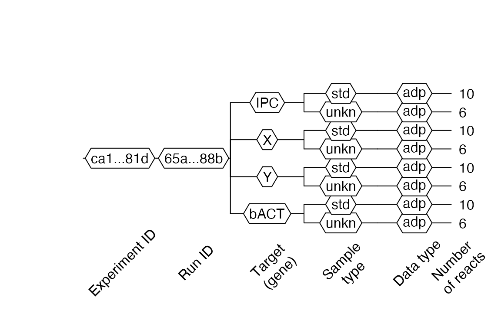
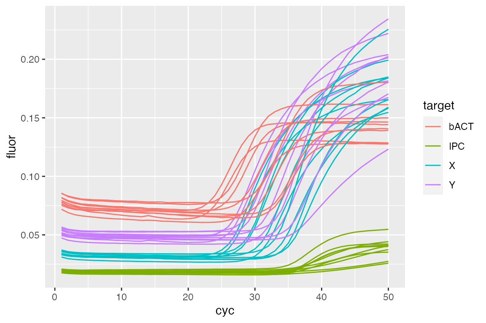
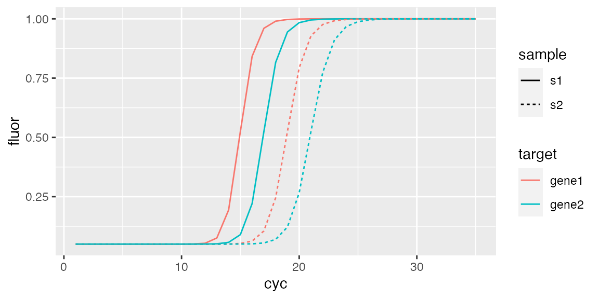
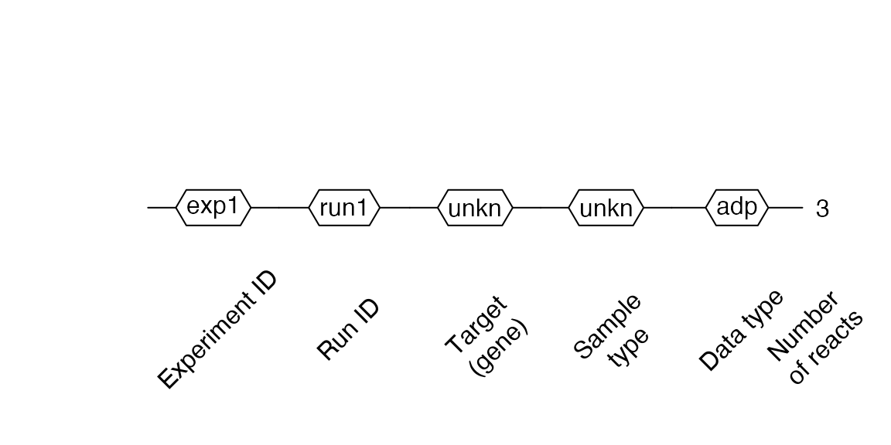
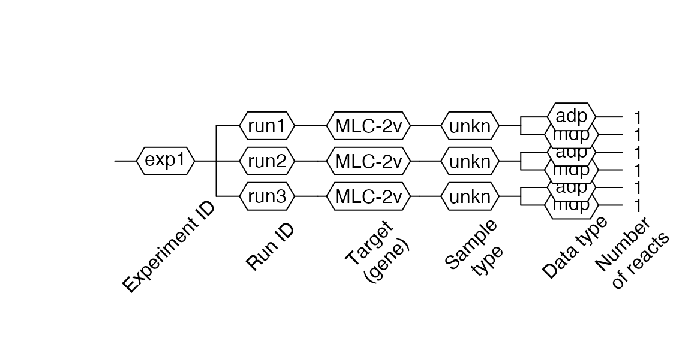
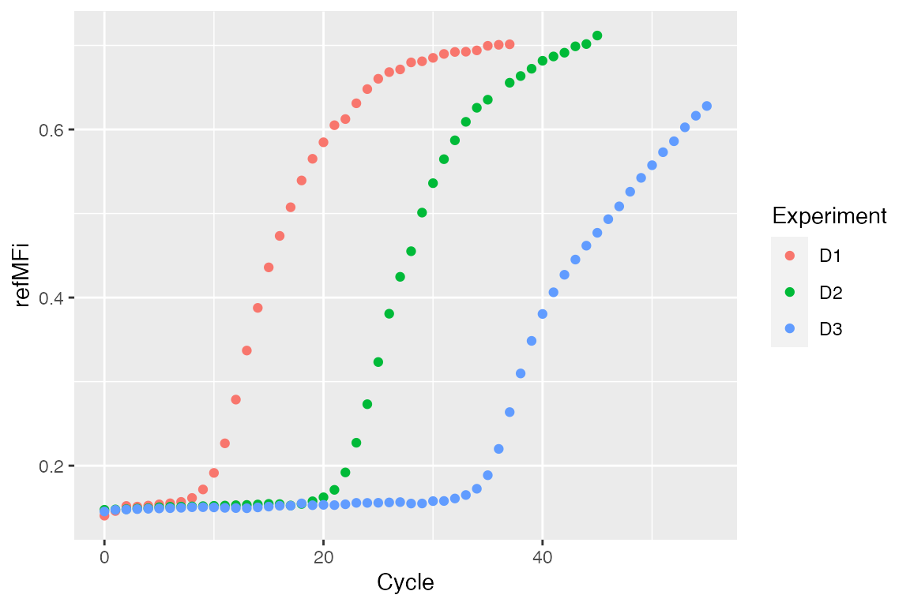
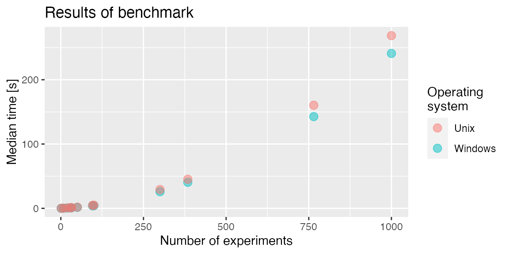

Using the RDML package
Konstantin A. Blagodatskikh, Michał Burdukiewicz, Stefan Rödiger
2017-07-25
Introduction to the RDML package
The RDML package was created to work with the Real-time PCR Data Markup Language (RDML) – a structured and universal data standard for exchanging quantitative PCR (qPCR) data (Lefever et al. 2009; Jan M Ruijter et al. 2015). RDML belongs to the family of eXtensible Markup Languages (XML), and contains fluorescence data as well as information about the qPCR experiment. A description and the RDML schema and the RDML format are available at http://rdml.org.
The XML technology is commonly used in the R environment and there are several tools to manipulate XML files (Nolan and Lang 2014). When working with XML data, the workhorse package is XML (Lang and CRAN Team 2015). Therefore, investments in development, implementation and maintenance is moderate.
We use the R6 (Chang 2015), assertthat (Wickham 2013), plyr (Wickham 2011), dplyr (Wickham and Francois 2015), tidyr (Wickham 2014) and rlist (Ren 2015) packages.
Philosphy of the RDML package
RDML imports various data formats (CSV, XMLX) apart from the RDML format. Provided that the raw data have a defined structure (as described in the vignette), the import should be done by a few clicks. The example below shows the import of amplification curve data, which were stored in a CSV file. The function rdmlEdit() was used in the RKWard IDE/GUI (Rödiger et al. 2012) (tested with version 0.6.9z+0.7.0+devel1 on Kubuntu 17.04; NOTE: problems were reported on systems where not the webkit component was used for the rendering of the rdmlEdit() GUI) for further processing.
Once imported, this enables rdmlEDIT() and other functions from the RDML package to conduct complex data visualization and processing in the R statistical computing environment.

Major functionalities of the RDML package
The public methods of the main R6 “RDML” class can be used to access and process the internally stored RDML data. These methods include:
- new() – creates a new RDML object, empty or from a specified RDML file;
- AsDendrogram() – plots the structure of an RDML object as a dendrogram;
- AsTable() – represents the data contained in an RDML object (except fluorescence data) as a data.frame;
- GetFData() – gets fluorescence data;
- SetFData() – sets fluorescence data to an RDML object;
- AsXML() – saves an RDML object as an RDMLv.1.2 file.
Vendors and software packages supporting RDML
The RDML format is supported by Bio-Rad (CFX 96 and CFX 384), Life Technologies (StepOne, ViiA7, QuantStudio) and Roche (LightCycler~96) thermocycler systems. In addition, several software packages (e.g., Primer3Plus, RDML-Ninja, qBase+) exist, which support RDML (Untergasser et al. 2007; Hellemans et al. 2007; J M Ruijter et al. 2009; Pabinger et al. 2014; Jan M Ruijter et al. 2015).
Structure of the RDML package
The structure of the RDML package mimics the RDML format and provides several R6 classes that correspond to RDML v1.2 format types. All major manipulations with RDML data can be done by a class called RDML through its public methods:
-
$new()– creates new RDML object (empty or from specified RDML file) -
$AsTable()– represents data contained in RDML object (except fluorescent data) as data.frame. -
$GetFData()– gets fluorescent data. -
$SetFData()– sets fluorescent data to RDML object. -
$AsDendrogram()– represents structure of RDML object as dendrogram.
Opening and observing RDML file
In this section, we will use the built-in RDML example file lc96_bACTXY.rdml. This file was obtained during the measurement of human DNA concentration by a LightCycler 96 (Roche) and the XY-Detect kit (Syntol, Russia).
To open the lc96_bACTXY.rdml file, we have to create a new RDML object with its class initializer – $new() and the file name as parameter filename.
filename <- system.file("extdata/lc96_bACTXY.rdml", package = "RDML")
lc96 <- RDML$new(filename = filename)Next we can check the structure of our new object – lc96 by printing it.
lc96
#> dateMade: 2014-08-19T11:25:48
#> dateUpdated: 2014-08-27T12:06:21
#> id: [Roche Diagnostics]
#> experimenter: []
#> documentation: []
#> dye: [FAM, Hex, Texas Red, Cy5]
#> sample: [Sample 39, Sample 41, Sample 43, Sample 45, Sample 51, Sample 53, Sample 54, Sample 55, Sample 56, Sample 57, Sample 58]
#> target: [30116ec1-44f6-4c9c-9c69-5d6f00226d4e, 69b0b5cd-591c-4012-a995-7a8b53861548, 7797a698-1b2d-4819-bf7d-1188f2c8ca7f, c16f36ee-8636-40d2-ae72-b00d3b2eb89d, bACT, X, Y, IPC]
#> thermalCyclingConditions: [2f78ed33-724e-4a29-97e9-92296eb868e1]
#> experiment: [ca1eb225-ecea-4793-9804-87bfbb45f81d]As a result we can see field names, and after :
- names of the
R6objects contained at this field after~, - contained values after
:, - names of list elements enclosed in
[].
The field names for all RDML package classes correspond to field names of RDML types as described at http://rdml.org/files.php?v=1.2.

Image source: http://rdml.org/.
For the base class RDML they are:
dateMadedateUpdated-
id– publisher and id to the RDML file. -
experimenter– contact details of the experimenter. -
documentation– these elements should be used if the same description applies to many samples, targets, or experiments. -
dye– information about a dye. -
sample– defined template solutions. -
target– defined PCR reactions. -
thermalCyclingConditions– cycling programs for PCR or to amplify cDNA. experiment
These fields can be divided by two parts:
Experiment field
Contains one or more experiments with fluorescence data. Fluorescence data are stored at the data level of an experiment. For example, fluorescence data for reaction tube 45 and target bACT can be accessed with the following code:
fdata <-
lc96$
experiment$`ca1eb225-ecea-4793-9804-87bfbb45f81d`$
run$`65aeb1ec-b377-4ef6-b03f-92898d47488b`$
react$`45`$
data$bACT$
adp$fpoints #'adp' means amplification data points (qPCR)
head(fdata)
#> cyc tmp fluor
#> 1: 1 68.0054 0.0782385
#> 2: 2 68.0429 0.0753689
#> 3: 3 68.0451 0.0736838
#> 4: 4 68.0525 0.0723196
#> 5: 5 68.0537 0.0717019
#> 6: 6 68.0538 0.0714182The structure of experiments can be visualized by plotting dendrograms.
lc96$AsDendrogram()
In this dendrogram 1 we can see that our file consists of one experiment and one run. Four targets, each with two sample types (std – standard, unkn – unknown), are part of the experiment. There is only qPCR data – adp in this experiment. Ten reactions (tubes) for standard type (std) and six reaction for the unknown (unkn) type. The total number of reactions can be more than the number of reactions on the plate because one tube can contain more than one target (e.g., multiplexing).
Additional information fields
All fields other than experiment. This additional information can be referenced in other parts of the RDML file. For example, to access sample added to react 39 and get its quantity, we can use code like this:
ref <- lc96$
experiment$`ca1eb225-ecea-4793-9804-87bfbb45f81d`$
run$`65aeb1ec-b377-4ef6-b03f-92898d47488b`$
react$`39`$
sample$id
sample <- lc96$sample[[ref]]
sample$quantity$value
#> NULLCopying RDML objects
R6 objects are environments, that’s why simple copying results in creating references to existing objects. Then modifying the copy leads to modification of the original object. To create a real copy of the object we have to use method $clone(deep = TRUE) provided by the R6 class.
id1 <- idType$new("id_1")
id2 <- id1
id3 <- id1$clone(deep = TRUE)
id2$id <- "id_2"
id3$id <- "id_3"
cat(sprintf("Original object\t: %s ('id_1' bacame 'id_2')\nSimple copy\t\t: %s\nClone\t\t\t: %s\n",
id1$id, id2$id, id3$id))
#> Original object : id_2 ('id_1' bacame 'id_2')
#> Simple copy : id_2
#> Clone : id_3From the example above, we can see that the modification of id2 led to a modification of the original object id1, however modification of cloned object id3 did not.
Modifying RDML objects
To modify the content of RDML objects, we can use fields as setters. These setters provide type safe modifications by input validation. In addition, setting lists of objects generates names of list elements.
## Create 'real' copy of object
experiment <- lc96$experiment$`ca1eb225-ecea-4793-9804-87bfbb45f81d`$clone(deep = TRUE)
## Try to set 'id' with wrong input type.
## Correct type 'idType' can be seen at error message.
tryCatch(experiment$id <- "exp1",
error = function(e) print(e))
#> <simpleError in withCallingHandlers({ saveRDS(do.call(do.call, c(readRDS("/tmp/Rtmp3L8dEU/file22553424b6b4"), list(envir = .GlobalEnv)), envir = .GlobalEnv), file = "/tmp/Rtmp3L8dEU/file225546d4690")}, error = function(e) { saveRDS(list("error", e), file = paste0("/tmp/Rtmp3L8dEU/file225546d4690", ".error")) stop(e)}): Assertion on 'id' failed: Must have class 'idType', but has class 'character'.>
## Set 'id' with correct input type - 'idType'
experiment$id <- idType$new("exp1")
## Similar operations for 'run'
run <- experiment$run$`65aeb1ec-b377-4ef6-b03f-92898d47488b`$clone(deep = TRUE)
run$id <- idType$new("run1")
## Replace original elements with modified
experiment$run <- list(run)
lc96$experiment <- list(experiment)lc96$AsDendrogram()
Then, we can observe in 2 our modification with the $AsDendrogram() method.
AsTable() method
To obtain information about all fluorescence data in an RDML file (type of added sample, used target, starting quantity etc.) as a data.frame, we can use the $AsTable() method. By default, it provides such information as:
-
fdata.name– aggregated name for current fluorescence data. Default pattern isposition_sample_sample.type_target(e.g., D03_Sample 39_std_bACT). This pattern can be modified byname.patternargument. -
exp.id– experiment id (e.g., exp1). -
run.id– run id (e.g., run1). -
react.id– react (tube) id (e.g., 39). -
position– react (tube) position (e.g., D03). -
sample– name of the added sample (e.g., Sample 39). -
target– detection target (e.g., bACT). -
target.dyeId– detection dye (e.g., FAM). -
sample,type– type of the added sample (e.g., std). -
adp–TRUEif contains qPCR data. -
mdp–TRUEif contains melting data.
To add custom columns to the output data.frame, we should pass it as a named method argument by generating expressions. Values for default columns can be used by custom name patterns and new columns referring to their names. Thr next example shows how to use the $AsTable() method with a custom name pattern and additional columns.
tab <- lc96$AsTable(
# Custom name pattern 'position~sample~sample.type~target~dye'
name.pattern = paste(
react$position,
react$sample$id,
private$.sample[[react$sample$id]]$type$value,
data$tar$id,
target[[data$tar$id]]$dyeId$id,
sep = "~"),
# Custom column 'quantity' - starting quantity of added sample
quantity = {
value <- sample[[react$sample$id]]$quantity$value
if (is.null(value) || is.na(value)) NULL
else value
}
)
## Remove row names for compact printing
rownames(tab) <- NULL
head(tab)
#> fdata.name exp.id run.id react.id position sample
#> 1: D03~Sample 39~std~IPC~Cy5 exp1 run1 39 D03 Sample 39
#> 2: D03~Sample 39~std~X~Hex exp1 run1 39 D03 Sample 39
#> 3: D03~Sample 39~std~Y~Texas Red exp1 run1 39 D03 Sample 39
#> 4: D03~Sample 39~std~bACT~FAM exp1 run1 39 D03 Sample 39
#> 5: D04~Sample 39~std~IPC~Cy5 exp1 run1 40 D04 Sample 39
#> 6: D04~Sample 39~std~X~Hex exp1 run1 40 D04 Sample 39
#> target target.dyeId sample.type adp mdp
#> 1: IPC Cy5 std TRUE FALSE
#> 2: X Hex std TRUE FALSE
#> 3: Y Texas Red std TRUE FALSE
#> 4: bACT FAM std TRUE FALSE
#> 5: IPC Cy5 std TRUE FALSE
#> 6: X Hex std TRUE FALSEHere, the generated data.frame is also used as a query in $GetFData() and $SetFData() methods (see further sections).
Getting fluorescence data
We can extract the fluorescence data in two ways:
- direct access to the data as described in the Experiment field subsection
- using the special method
$GetFData()
The advantage of $GetFData() is that it can combine fluorescence data from many plates into one data.frame. The major argument of this function is request, which defines fluorescence data to be extracted. This request is the output from the $AsTable() method and can be easily filtered by the dplyr filter() function. Furthermore cycle limits, the output data.frame format as well as data types (fdata.type = 'adp' for qPCR, fdata.type = 'mdp' for melting data) can by specified (see examples below).
library(dplyr)
#>
#> Attaching package: 'dplyr'
#> The following objects are masked from 'package:stats':
#>
#> filter, lag
#> The following objects are masked from 'package:base':
#>
#> intersect, setdiff, setequal, union
library(ggplot2)
## Prepare request to get only 'std' type samples
filtered.tab <- filter(tab,
sample.type == "std")
fdata <- lc96$GetFData(filtered.tab,
# long table format for usage with ggplot2
long.table = TRUE)
ggplot(fdata, aes(cyc, fluor)) +
geom_line(aes(group = fdata.name,
color = target))
Our example curves are not background subtracted, as visible in the plot. To accomplish this, we use the CPP() function from the chipPCR package (Rödiger, Burdukiewicz, and Schierack 2015) as described in Rödiger et al. (2015).
library(chipPCR)
tab <- lc96$AsTable(
# Custom name pattern 'position~sample~sample.type~target~run.id'
name.pattern = paste(
react$position,
react$sample$id,
private$.sample[[react$sample$id]]$type$value,
data$tar$id,
run$id$id, # run id added to names
sep = "~"))
## Get all fluorescence data
fdata <- as.data.frame(lc96$GetFData(tab,
# We don't need long table format for CPP()
long.table = FALSE))
fdata.cpp <- cbind(cyc = fdata[, 1],
apply(fdata[, -1], 2,
function(x) CPP(fdata[, 1],
x)$y))Now we have properly preprocessed data, which we will add to our object and use in the next section.
Setting fluorescence data
To define fluorescence data as an RDML object, we can use the $SetFData() method. It takes three arguments:
-
fdata– fluorescence data inlong.table = FALSEformat -
request– output from theAsTable()function, which is used to set data; -
fdata.type–fdata.type = 'adp'for qPCR,fdata.type = 'mdp'for melting data.
In the following we will define preprocessed fluorescence data as the new run – run1_cpp. The subelements of RDML such as experiment, run, react and data that do not initially exist in an RDML object are created by SetFData automaticaly (read more at Creating RDML from table section).
Note that the colnames in
fdataandfdata.nameinrequesthave to be the same!
tab$run.id <- "run.cpp"
## Set fluorescence data from previous section
lc96$SetFData(fdata.cpp,
tab)
## View setted data
fdata <- lc96$GetFData(tab,
long.table = TRUE)
ggplot(fdata, aes(cyc, fluor)) +
geom_line(aes(group = fdata.name,
color = target))
Merging RDML objects
Merging RDML objects can be conducted by the MergeRDMLs() function. It takes a list of RDML objects and returns one single RDML object.
## Load another built in RDML file
stepone <- RDML$new(paste0(path.package("RDML"),
"/extdata/", "stepone_std.rdml"))
## Merge it with our 'lc96' object
merged <- MergeRDMLs(list(lc96, stepone))
## View structure of new object
merged$AsDendrogram()
#> Warning in self$AsTable(): fdata.name column has duplicates! Try another
#> name.pattern.
Saving RDML object as RDML file
To save RDML objects in RDML file v1.2 format, we can use the $AsXML() method where the file.name argument is the name of new RDML file. Without file.name given, the function returns an XML tree.
lc96$AsXML("lc96.rdml")
One can use RDML-ninja or the RDML validator from the RMDL consortiun to validate RDML files created by the RDML package.
Creating custom functions
R6 classes allow to add methods to existing classes by using the $set() method. Suppose that we want to add a method to preprocess all fluorescence data and calculate Cq values:
RDML$set("public", "CalcCq",
function() {
library(chipPCR)
fdata <- as.data.frame(self$GetFData(
self$AsTable()))
fdata <- cbind(cyc = fdata[, 1],
apply(fdata[, -1],
2,
function(x)
# Data preprocessing
CPP(fdata[, 1],
x)$y)
)
apply(fdata[, -1], 2,
function(x) {
tryCatch(
# Calculate Cq
th.cyc(fdata[, 1], x,
auto = TRUE)@.Data[1],
error = function(e) NA)
})
}
)
## Create new object with our advanced class
stepone <- RDML$new(paste0(path.package("RDML"),
"/extdata/", "stepone_std.rdml"))We can then apply our new method:
stepone$CalcCq()
#> A01_NTC_RNase P_ntc_RNase P A02_NTC_RNase P_ntc_RNase P
#> 13.801661 12.964268
#> A03_NTC_RNase P_ntc_RNase P A04_pop1_RNase P_unkn_RNase P
#> 14.399910 13.529380
#> A05_pop1_RNase P_unkn_RNase P A06_pop1_RNase P_unkn_RNase P
#> 14.609048 14.160886
#> A07_pop2_RNase P_unkn_RNase P A08_pop2_RNase P_unkn_RNase P
#> 11.839277 10.947218
#> B01_pop2_RNase P_unkn_RNase P B02_STD_RNase P_10000.0_std_RNase P
#> 13.167509 13.415532
#> B03_STD_RNase P_10000.0_std_RNase P B04_STD_RNase P_10000.0_std_RNase P
#> 13.363262 14.082731
#> B05_STD_RNase P_5000.0_std_RNase P B06_STD_RNase P_5000.0_std_RNase P
#> 13.039183 14.012804
#> B07_STD_RNase P_5000.0_std_RNase P B08_STD_RNase P_2500.0_std_RNase P
#> 9.790724 12.981337
#> C01_STD_RNase P_2500.0_std_RNase P C02_STD_RNase P_2500.0_std_RNase P
#> 15.666928 13.132126
#> C03_STD_RNase P_1250.0_std_RNase P C04_STD_RNase P_1250.0_std_RNase P
#> 13.905808 14.974769
#> C05_STD_RNase P_1250.0_std_RNase P C06_STD_RNase P_625.0_std_RNase P
#> 13.880906 12.850727
#> C07_STD_RNase P_625.0_std_RNase P C08_STD_RNase P_625.0_std_RNase P
#> 16.915642 13.706484Creating RDML from tables
RDML objects can not only be generated from files but also from user data contained in data.frames. For this, we have to create an empty RDML object, create a data.frame containing the data and set it by the $SetFData() method. Minimal required information (samples, targets, dyes) will be created from the data description.
#### Create simulated data with AmpSim() from chipPCR package
## Cq for data to be generated
Cqs <- c(15, 17, 19, 21)
## PCR si,ulation will be 35 cycles
fdata <- data.frame(cyc = 1:35)
for(Cq in Cqs) {
fdata <- cbind(fdata,
AmpSim(cyc = 1:35, Cq = Cq)[, 2])
}
## Set names for fluorescence curves
colnames(fdata)[2:5] <- c("c1", "c2", "c3", "c4")
## Create minimal description
descr <- data.frame(
fdata.name = c("c1", "c2", "c3", "c4"),
exp.id = c("exp1", "exp1", "exp1", "exp1"),
run.id = c("run1", "run1", "run1", "run1"),
react.id = c(1, 1, 2, 2),
sample = c("s1", "s1", "s2", "s2"),
sample.type = c("unkn", "unkn", "unkn", "unkn"),
target = c("gene1", "gene2", "gene1", "gene2"),
target.dyeId = c("FAM", "ROX", "FAM", "ROX"),
stringsAsFactors = FALSE
)
## Create empty RDML object
sim <- RDML$new()
## Add fluorescence data
sim$SetFData(fdata, descr)
## Observe object
sim$AsDendrogram()fdata <- sim$GetFData(sim$AsTable(),
long.table = TRUE)
ggplot(fdata, aes(cyc, fluor)) +
geom_line(aes(group = fdata.name,
color = target,
linetype = sample))
Creating RDML from ABI 7500 v.2 software
RDML objects can be created from .eds files generated by the ABI 7500 v.2 or StepOne software (here, all analyses have to be conducted within the device software!).
filename <- system.file("extdata/from_abi7500/sce.eds", package = "RDML")
abi <- RDML$new(filename = filename)
abi$AsDendrogram()Creating RDML from .csv files
RDML objects can be generated from .csv files. The files need to contain a first column named cyc for qPCR data or tmp for melting data. The remaining columns must contain the raw fluorescence signals.
filename <- system.file("extdata/from_tables/fdata.csv", package = "RDML")
csv <- RDML$new(filename = filename)
csv$AsDendrogram()
Creating RDML from .xls or .xslx files
RDML objects can also be generated from .xls or .xslx file. The files need to contain a description data.frame at tab sheet description and qPCR data at tab sheet adp, and/or qPCR data at tab sheet mdp.
filename <- system.file("extdata/from_tables/table.xlsx", package = "RDML")
xslx <- RDML$new(filename = filename)
#> Warning in value[[3L]](cond): NAs introduced by coercion
#> Warning in value[[3L]](cond): NAs introduced by coercion
xslx$AsDendrogram()
Functional style
To provide a functional programming style that is more convenient in R, the RDML class methods have function wrappers:
-
obj$AsTable(...)–AsTable(obj, ...) -
obj$SetFData(...)–SetFData(obj, ...) -
obj$GetFData(...)–GetFData(obj, ...) -
obj$AsDendrogram(...)–AsDendrogram(obj, ...)
Summary
The RDML package provides classes and methods to work with RDML data generated by real-time quantitative PCR devices or enables creating RDML files from user generated data. Because classes of the RDML package are built with R6, they can be modified by adding custom methods and ensure type safe usage through input validation.
Creating RDML file from raw data
This vignette describes important step how to create RDML object from user provided data and calculate Cq values with custom RDML class method. We use a real-world example to demonstrate the use of the RDML package.
For this purpose we used data from the VideoScan platform. The VideoScan platform is a highly versatile fluorescence microscope based imaging platform for the real-time analysis of biomolecular interactions. VideoScan has been extended by a heating/cooling-unit, which can be used for DNA melting curve analysis (Rödiger, Böhm, and Schimke 2013), real-time quantitative PCR (Rödiger et al. 2013) and quantitative isothermal amplification (Spiess et al. 2015). In this example we focus on qPCR data obtained from the amplification of the human gene mlc-2v (Sheikh, Lyon, and Chen 2015). The experimental details (e.g., primer sequences, amplification conditions) are described in (Rödiger et al. 2013; George et al. 2016).
In detail, this dataset contains three amplification curves collected by three runs monitored with TaqMan qPCR chemistry. Similar to other experimental platforms has the VideoScan systems an output as csv file (comma separated value). In general, csv is a format that is sufficient for an in house usage. However, the exchange with other scientists is demanding, since experimental metadata is not consistently included in csv files. These are for example information about qPCR conditions, primers, experimentalist and so on as described in the MIQE and RDML standard documentations.
All csv raw data were transferred to the R environment and stored as rda files in the C54 dataset after completion of the experiment as described elsewhere (R Development Core Team 2012). The R environment provides numerous packages for the import of standard file formats, including formats from spread sheet applications (e.g., XLS, XLSX, ODS) (Schutten 2014, Warnes et al. (2015), Dragulescu (2014)), an ODBC connection (Ripley and 2002) 2015) or from the clipboard (read.table("clipboard")). There are several graphical user interfaces (GUIs) for R, which facilitate an easy import of raw data (Valero-Mora and Ledesma 2012). For example RKWard (Rödiger et al. 2012) has import functionality for csv, txt, spss and stata files.
We will use the C54 dataset directly from the chipPCR package (Rödiger, Burdukiewicz, and Schierack 2015). The amplification curves have different number of cycles and one of them contains a missing value due to a sensor dropout. Thus, this data should be preprocessed before Cq calculation.
R is a language with dynamic typing. This is helpful while scripting, but can lead to problematic debugging of more complicated workflows. R6 classes provide type-safe interfaces to set data without access to the inner structure of objects so that all imported data can be validated. This option is highly useful when creating packages at an intermediate level for other packages (e.g., such an approach does not permit set type character in place of type integer). Furthermore, the inheritance of R6 objects unifies the structure of the package and streamlines the extending of its capabilities (since the whole package is written around a single base class).
Initialization
First of all we have to load all necessary packages and fluorescence data into our R session.
library(RDML)
library(chipPCR)
library(MBmca)
library(ggplot2)
data(C54)We can see that our data are arranged in data.frame with cycle numbers in the first column and fluorescence values in the other columns. Such data structure is ready to use with the RDML package and does not need any conversion.
str(C54)
#> 'data.frame': 56 obs. of 4 variables:
#> $ Cycle: num 0 1 2 3 4 5 6 7 8 9 ...
#> $ D1 : num 0.141 0.146 0.152 0.151 0.153 ...
#> $ D2 : num 0.148 0.148 0.148 0.149 0.149 ...
#> $ D3 : num 0.145 0.147 0.148 0.148 0.149 ...
dat <- data.frame(Cycle = rep(C54[, 1], ncol(C54) - 1),
Experiment = unlist(lapply(colnames(C54)[-1], function(i) rep(i, nrow(C54)))),
refMFi = unlist(C54[, -1]))
levels(dat[["Experiment"]]) <- c("D1 - Stock cDNA", "D2 - 1/10 cDNA", "D3 - 1/100 cDNA")
ggplot(dat, aes(x = Cycle, y = refMFi, colour = Experiment)) + geom_point()
Creating custom method for RDML class
The preprocessing and Cq calculation steps are held within a RDML object. To do this we shall add custom method to the RDML class and use this advanced class as RDML object initializator (data import).
As described previously (Rödiger et al. 2015), we first preprocess the raw data with the CPP function from the chipPCR package. Next, these preprocessed data are stored in new runs within the same experiment. For Cq calculation we used the diffQ2 function from the MBmca (Rödiger, Böhm, and Schimke 2013) package. Note, there are other functions available within R to determine the Cq values. The qpcR package is one of the most popular packages for such tasks.
Additional our method will have two arguments:
- vector
last.cycle– cycle limits for every amplification curve; - list
bg.range– background range for every amplification curve.
RDML$set("public", "ProcessVideoScan",
function(last.cycle,
bg.range) {
# Get curves description
tab <- as.data.frame(self$AsTable())
# Get fluorescent point
dat <- as.data.frame(self$GetFData(tab))
# Give new names to runs
# Preprocess amplification curve raw data as described in
# Rödiger et al. (2015) Bioinformatics. Note that the dataset
# has different length of cycle numbers and missing values (NAs).
# The CPP function from the chipPCR package prepares the data for
# further analysis.
tab[, "run.id"] <- paste0(tab[, "run.id"], "_CPP")
# Curves will be used one by one
for(i in 2:length(dat)) {
# Preprocess data
preprocessed <- CPP(dat[1:last.cycle[i - 1], 1],
dat[1:last.cycle[i - 1], i],
trans = TRUE,
bg.range = bg.range[[i - 1]])[["y.norm"]]
# Create data.frame with cycle number and preprocessed curve Then
# give name to fluorescence points columns as before preprocessing
dat_CPP <- cbind(dat[1:last.cycle[i - 1], 1],
preprocessed)
colnames(dat_CPP)[2] <- tab$fdata.name[i - 1]
# Set preprocessed data with new description (new run names)
self$SetFData(dat_CPP, tab)
# Calculate and set Cq
# Set Cq from second derivative maximum method as described in
# Rödiger et al. (2015) Bioinformatics for preprocessed data.
# The diffQ2 function from the MBmca package
# (Rödiger et al. (2013), The R Journal) was used to calculate the
# Cq values of each amplification curve.
cq <- diffQ2(dat_CPP, inder = TRUE)[["xTm1.2.D2"]][1]
self$experiment[[tab[i - 1, "exp.id"]]]$
run[[tab[i - 1, "run.id"]]]$
react[[tab[i - 1, "react.id"]]]$
data[[tab[i - 1, "target"]]]$cq <- cq
}
}, overwrite = TRUE
)RDML object creation
Now we can create an empty RDML object with our advanced class and set the fluorescence data into it. For setting the data we have to create a description (metadata) of the amplification curves, which contain:
-
fdata.name– curve name. Have to be as columns names in data.frame with fluorescence data. -
exp.id– experiment name. -
run.id– run name. In our case we have three runs. -
react.id– react ID. E.g., number of tube within a reaction plate. -
sample– sample name. -
type– sample type. -
target– target name. E.g., gene of interest name. -
target.dyeID– fluorescent dye used for detection.
# Create a data frame of metadata
description <- data.frame(
fdata.name = c("D1", "D2", "D3"),
exp.id = c("exp1", "exp1", "exp1"),
run.id = c("run1", "run2", "run3"),
react.id = c(1, 1, 1),
sample = c("D1 - Stock cDNA", "D2 - 1/10 cDNA", "D3 - 1/100 cDNA"),
sample.type = c("unkn", "unkn", "unkn"),
target = c("MLC-2v", "MLC-2v", "MLC-2v"),
target.dyeId = c("Cy5", "Cy5", "Cy5"),
stringsAsFactors = FALSE
)
# Create an empty RDML object
video.scan <- RDML$new()
# Add fluorescence data and metadata to the RDML object from a given source.
# For the sake of simplicity we use the C54 dataset from the chipPCR package.
video.scan$SetFData(C54, description)Setting additional information
As optional step, we can add some information about our experiment. Such as experimenter contacts, references to documentation, description of samples and targets, thermal cycling conditions, etc.
# Add experimentalist information
video.scan$experimenter <-
list(
experimenterType$new(
idType$new("SR"),
"Stefan",
"Roediger",
"stefan.roediger@b-tu.de"
),
experimenterType$new(
idType$new("CD"),
"Claudia",
"Deutschmann"
)
)
# Add a reference to documentation
video.scan$documentation <- list(
documentationType$new(
idType$new("Roediger et al. 2013"),
paste("A Highly Versatile Microscope Imaging Technology Platform for the Multiplex",
"Real-Time Detection of Biomolecules and Autoimmune Antibodies. S. Roediger,",
"P. Schierack, A. Boehm, J. Nitschke, I. Berger, U. Froemmel, C. Schmidt, M.",
"Ruhland, I. Schimke, D. Roggenbuck, W. Lehmann and C. Schroeder. Advances in",
"Biochemical Bioengineering/Biotechnology. 133:33-74, 2013.",
"https://www.ncbi.nlm.nih.gov/pubmed/22437246")
)
)
cdna <-
cdnaSynthesisMethodType$new(
enzyme = "SuperScript II",
primingMethod =
primingMethodType$new("oligo-dt"),
dnaseTreatment = TRUE
)
video.scan$sample$`D1 - Stock cDNA`$description <- "Input stock cDNA was used undiluted (D1)"
video.scan$sample$`D1 - Stock cDNA`$cdnaSynthesisMethod <- cdna
video.scan$sample$`D2 - 1/10 cDNA`$description <- "1/1000 diluted in A. bidest"
video.scan$sample$`D2 - 1/10 cDNA`$cdnaSynthesisMethod <- cdna
video.scan$sample$`D3 - 1/100 cDNA`$description <- "1/1000000 diluted in A. bidest"
video.scan$sample$`D3 - 1/100 cDNA`$cdnaSynthesisMethod <- cdna
video.scan$target$`MLC-2v`$xRef <- list(
xRefType$new("uniprot",
"P10916")
)
video.scan$target$`MLC-2v`$sequences <-
sequencesType$new(
forwardPrimer <- oligoType$new(
sequence = "ACAGGGATGGCTTCATTGAC"),
reversePrimer <- oligoType$new(
sequence = "ATGCGTTGAGAATGGTTTCC"),
probe1 <- oligoType$new(
threePrimeTag = "Atto647N",
sequence = "CAGGGTCCGCTCCCTTAAGTTTCTCC",
fivePrimeTag = "BHQ2")
)
tcc <-
thermalCyclingConditionsType$new(
idType$new("Amplification"),
experimenter = list(
idReferencesType$new("SR"),
idReferencesType$new("CD")
),
step =
list(
stepType$new(
nr = 1,
temperature = temperatureType$new(95,
600)
),
stepType$new(
nr = 2,
temperature = temperatureType$new(95,
40)
),
stepType$new(
nr = 3,
temperature = temperatureType$new(58.5,
90)
),
stepType$new(
nr = 4,
temperature = temperatureType$new(68.5,
90)
),
stepType$new(
nr = 5,
loop = loopType$new(goto = 2,
repeat.n = 49)
)
)
)
video.scan$thermalCyclingConditions <- list(
tcc
)
#add description of the experiment
video.scan$experiment$exp1$description <-
paste("The aim was to amplify MLC-2v in the VideoScan and to monitor with a",
"hydrolysis probe for MLC-2v. The primer sequences for MLC-2v were taken",
"from Roediger et al. (2013). The amplification was detected in solution of",
"the 1 HCU (see Roediger et al. 2013 for details). A 20 micro L PCR reaction",
"was composed of 250 nM primer (forward and reverse), 1x Maxima Probe qPCR",
"Master Mix (Fermentas), 1 micro L template (MLC-2v amplification product in",
"different dilutions), 50 nM hydrolysis probe for MLC-2v and A.",
"bidest. During the amplification, fluorescence was measured at 59.5 degree",
"Celsius. The Cy5 channel was used to monitor the MLC-2v specific hydrolysis",
"probe. Input stock cDNA was used undiluted (D1). D2 was 1/1000 and D3",
"1/1000000 diluted in A. bidest. The D1, D2, and D3 have different numbers",
"measure points and D2 contains a missing value at cycle 37.")
video.scan$experiment$exp1$run$run1$thermalCyclingConditions <- idReferencesType$new("Amplification")
video.scan$experiment$exp1$run$run2$thermalCyclingConditions <- idReferencesType$new("Amplification")
video.scan$experiment$exp1$run$run3$thermalCyclingConditions <- idReferencesType$new("Amplification")Processing data
After creating RDML object and setting data we can use our method $ProcessVideoScan.
# Process VideoScan data
video.scan$ProcessVideoScan(last.cycle = c(35, 45, 55),
bg.range = list(c(1,8),
NULL,
NULL))
#> Warning in lm.coefs(x[BG], y[BG], method.reg): Chosen method lmrob failed to converge.
#> Performed linear regression.Then visualize the object with the $AsDendrogram method (runs with IDs that include _CPP in names, contain the preprocessed curves):
# Visualize RDML object
video.scan$AsDendrogram()And plot preprocessed curves indicating the Cq values:
## Visualise preprocessed data with Cq values as vertical dashed lines
# Add custom column that contains the calculated Cq
tab <- video.scan$AsTable(cq = {
cq <- data$cq
if (is.null(cq) || is.na(cq))
NULL
else
cq
})
# Get preprocessed data in 'long.table' format
dat <- video.scan$GetFData(tab[grepl("_CPP", tab[["run.id"]]), ],
long.table = TRUE)
ggplot(dat, aes(x = cyc, y = fluor)) +
geom_line(aes(group = fdata.name, color = fdata.name),
size = 1.2) +
geom_vline(aes(xintercept = cq, color = fdata.name),
linetype = "longdash") +
scale_x_continuous("Cycle") +
scale_y_continuous("Fluorescence") +
ggtitle("Amplification of human MLC-2v\nVideoScan HCU")
However, there are further R packages on CRAN, Bioconductor and GitHub, which can be used with the RDML package (Rödiger et al. 2015) to deal with non-detects (McCall et al. 2014), normalization (Perkins et al. 2012), expression analysis (Dvinge and Bertone 2009, matz_no_2013) and periodicity in qPCR systems (Spiess et al. 2016).
Export to file
To save our RDML object as file we can use $AsXML() method with file name as argument:
video.scan$AsXML("filename.RDML")
Note that currently due to limits of XML package it is rather slow operation!!!
A XML files can be compressed to save space. The RMDL package uses the zip() function from the utils package with default values to compress the RDML file. Therefore, the compression mode depends on the operating system. The RDML function AsXML() without an argument returns one string, which contains the XML data. This can be used to compress it with any other compression algorithm.
Benchmark of the RDML generation
The XML format becomes less efficient to work with at larger file sizes and complex structured information (e.g., matrices). Therefore, a limitation of RMDL is the process of the file generation. This characteristic is inherited by the RDML package. Speed is an issue in high-throughput applications. To give the user a foundation for a decision support if the implementation of the RMDL format is advisable, we performed a benchmark. We used the microbenchmark package (Olaf Mersmann and Friedman 2014, Radford (2014)) to assess the time required for generation of RDML files. The simulation included datasets with ranging from 1 to 1000 entries per file.
Dealing with other data formats
Researchers often collect gene expression data from more than one laboratory and and are thus required to analyze and aggregate many data sets. Adaptable data management - also known as “adaptive informatics” - is relevant in cases where data from different omics approaches and assays (e.g., flow cytometry, digital PCR, NGS) need to be merged (Baker 2012). As RDML is based on XML, it is possible to converge the files with other formats such as HDF, (Millard et al. 2011) which is supported by R (Fischer and Pau 2015). This enables extended data storage and analysis, but also a higher level of experimental data management.
Conclusion
In this example we used raw data from the VideoScan platform to demonstrate the creation of an RDML file via the RDML package. This procedure can be easily adapted to other experiments and devices and gives the researcher a tool to create a file in a standardized format for convenient data exchange. In contrast to simple csv files contains this file additional metadata in a defined structure. This in turn makes the data available to other scientists for reproducible research.
Benchmark
The RDML format may also store data from high-throughput technologies such as digital PCR or 384-well qPCR. To make the RDML package the most appropriate tool for these applications, we optimized the saving functionality of the package. Hence, the RDML package is able to save even large numbers of qPCR experiments in reasonable time.
We benchmarked the time needed for saving RDML object with different numbers of experiments on two desktop machines:
Windows 7 x64 (build 7601) Service Pack 1 on Intel Core i5 (2,40 GHz) with 4,00 GB RAM. R version 3.2.1 (2015-06-18).
Kubuntu 15.04 (Kernel 3.19.0-27-generic) Intel(R) Pentium(R) CPU 997 @ 1.60GHz with 4,00 GB RAM. R version 3.1.2 (2014-10-31).
In the case “1.” we used R version 3.2.1 (2015-06-18) and in the case “2.” we used R version 3.1.2 (2014-10-31)
To warrant fairest comparison and taking into account factors like garbage collection, we repeated the procedure 100 times.

| Number of experiments | Median time [s] | Operating System |
|---|---|---|
| 1 | 0.0525600 | Windows |
| 8 | 0.1965201 | Windows |
| 20 | 0.4882732 | Windows |
| 30 | 0.7770339 | Windows |
| 32 | 0.8454795 | Windows |
| 50 | 1.4801968 | Windows |
| 96 | 3.8208417 | Windows |
| 100 | 4.0498602 | Windows |
| 300 | 25.6566066 | Windows |
| 384 | 39.9697519 | Windows |
| 765 | 142.1440033 | Windows |
| 1000 | 239.7105810 | Windows |
| 1 | 0.0665418 | Unix |
| 8 | 0.2468777 | Unix |
| 20 | 0.6101219 | Unix |
| 30 | 0.9658560 | Unix |
| 32 | 1.0468907 | Unix |
| 50 | 1.8240828 | Unix |
| 96 | 4.5716005 | Unix |
| 100 | 4.8454858 | Unix |
| 300 | 29.0860889 | Unix |
| 384 | 44.9543657 | Unix |
| 765 | 159.6792129 | Unix |
| 1000 | 266.5159046 | Unix |
The results above indicate that, thanks to the RDML package, an average laboratory workstation is able to save large RDML files in reasonable time (around 4 minutes for 1000 experiments).
Validation of RDML files created by the RDML package
The correct structure of an RDML file is an important prerequisite to perform reproducible analysis. Unfortunately, the created files can not be properly tested to date because the official RDML validator rdml.org is not online from time to time. However, there is a solution to validate the files by the alternate editor - RDML-Ninja (Jan M Ruijter et al. 2015).
RDMLedit web-server
The http://shtest.evrogen.net/rdmlEdit/ is a web tool based on the functionalities of the RDML package. Aside from basic functionalities like data import, modification and export, RDMLedit also produces visualisations of qPCR data. In addition, RDMLedit can also merge multiple RDML files.
Local deployment of RDMLedit
As a https://shiny.rstudio.com/, RDMLedit may be also deployed locally. It requires an installed R and RDML package. To initialize, the user has to open R and run the following command: rdmlEdit().
References
Baker, Monya. 2012. “Quantitative Data: Learning to Share.” Nature Methods 9 (1): 39–41. doi:10.1038/nmeth.1815.
Chang, Winston. 2015. R6: Classes with Reference Semantics. https://CRAN.R-project.org/package=R6.
Dragulescu, Adrian A. 2014. Xlsx: Read, Write, Format Excel 2007 and Excel 97/2000/XP/2003 Files. https://CRAN.R-project.org/package=xlsx.
Dvinge, Heidi, and Paul Bertone. 2009. “HTqPCR: High-Throughput Analysis and Visualization of Quantitative Real-Time PCR Data in R.” Bioinformatics 25 (24): 3325–6. doi:10.1093/bioinformatics/btp578.
Fischer, Bernd, and Gregoire Pau. 2015. “rhdf5: HDF5 Interface to R.” R Package Version 2.10.0. https://www.bioconductor.org/packages/release/bioc/html/rhdf5.html.
George, Sandra, Stefan Rödiger, Christian Schröder, Michael Knaut, and Jan-Heiner Küpper. 2016. “Development of Multiplex PCR Systems for Expression Profiling of Human Cardiomyocytes Induced to Proliferate by Lentivirus Transduction of Upcyte Genes.” Journal of Cellular Biotechnology 2 (1): 35–55. doi:10.3233/JCB-15025.
Hellemans, Jan, Geert Mortier, Anne De Paepe, Frank Speleman, and Jo Vandesompele. 2007. “qBase Relative Quantification Framework and Software for Management and Automated Analysis of Real-Time Quantitative PCR Data.” Genome Biology 8 (2): R19. doi:10.1186/gb-2007-8-2-r19.
Lang, Duncan Temple, and the CRAN Team. 2015. XML: Tools for Parsing and Generating XML Within R and S-Plus. https://CRAN.R-project.org/package=XML.
Lefever, Steve, Jan Hellemans, Filip Pattyn, Daniel R. Przybylski, Chris Taylor, René Geurts, Andreas Untergasser, and Jo Vandesompele. 2009. “RDML: Structured Language and Reporting Guidelines for Real-Time Quantitative PCR Data.” Nucleic Acids Research 37 (7): 2065–9. https://nar.oxfordjournals.org/content/37/7/2065.
McCall, Matthew N., Helene R. McMurray, Hartmut Land, and Anthony Almudevar. 2014. “On Non-Detects in qPCR Data.” Bioinformatics 30 (16): 2310–6. doi:10.1093/bioinformatics/btu239.
Millard, Bjorn L., Mario Niepel, Michael P. Menden, Jeremy L. Muhlich, and Peter K. Sorger. 2011. “Adaptive Informatics for Multifactorial and High-Content Biological Data.” Nature Methods 8 (6): 487–92.
Nolan, Deborah, and Duncan Temple Lang. 2014. XML and Web Technologies for Data Sciences with R. Springer. https://www.springer.com/statistics/computational+statistics/book/978-1-4614-7899-7.
Olaf Mersmann, Rainer Hurling, Claudia Beleites, and Ari Friedman. 2014. microbenchmark: Accurate Timing Functions. https://CRAN.R-project.org/package=microbenchmark.
Pabinger, Stephan, Stefan Rödiger, Albert Kriegner, Klemens Vierlinger, and Andreas Weinhäusel. 2014. “A Survey of Tools for the Analysis of Quantitative PCR (qPCR) Data.” Biomolecular Detection and Quantification 1 (1): 23–33.
Perkins, James R., John M. Dawes, Steve B. McMahon, David LH Bennett, Christine Orengo, and Matthias Kohl. 2012. “ReadqPCR and NormqPCR: R Packages for the Reading, Quality Checking and Normalisation of RT-qPCR Quantification Cycle (Cq) Data.” BMC Genomics 13 (1): 296. doi:10.1186/1471-2164-13-296.
R Development Core Team. 2012. R Data Import/Export. Vienna, Austria: R Foundation for Statistical Computing. https://www.R-project.org/.
Radford, Neal. 2014. Inaccurate Results from Microbenchmark. https://web.archive.org/web/20140823221902/https://www.r-bloggers.com/inaccurate-results-from-microbenchmark/.
Ren, Kun. 2015. rlist: A Toolbox for Non-Tabular Data Manipulation. https://CRAN.R-project.org/package=rlist.
Ripley, Brian, and Michael Lapsley (1999 to Oct 2002). 2015. RODBC: ODBC Database Access. https://CRAN.R-project.org/package=RODBC.
Rödiger, Stefan, Alexander Böhm, and Ingolf Schimke. 2013. “Surface Melting Curve Analysis with R.” The R Journal 5 (2): 37–53. https://journal.r-project.org/archive/2013-2/roediger-bohm-schimke.pdf.
Rödiger, Stefan, Michał Burdukiewicz, and Peter Schierack. 2015. “chipPCR: an R package to pre-process raw data of amplification curves.” Bioinformatics 31 (17): 2900–2902. https://bioinformatics.oxfordjournals.org/content/31/17/2900.abstract.
Rödiger, Stefan, Michał Burdukiewicz, Konstantin Blagodatskikh, and Peter Schierack. 2015. “R as an Environment for the Reproducible Analysis of Dna Amplification Experiments.” The R Journal 7 (2): 127–50.
Rödiger, Stefan, Thomas Friedrichsmeier, Prasenjit Kapat, and Meik Michalke. 2012. “RKWard: A Comprehensive Graphical User Interface and Integrated Development Environment for Statistical Analysis with R.” Journal of Statistical Software 49 (9): 1–34. https://www.jstatsoft.org/article/view/v049i09.
Rödiger, Stefan, Peter Schierack, Alexander Böhm, Jörg Nitschke, Ingo Berger, Ulrike Frömmel, Carsten Schmidt, et al. 2013. “A highly versatile microscope imaging technology platform for the multiplex real-time detection of biomolecules and autoimmune antibodies.” Advances in Biochemical Engineering/Biotechnology 133: 35–74.
Ruijter, J M, C Ramakers, W M H Hoogaars, Y Karlen, O Bakker, M J B van den Hoff, and A F M Moorman. 2009. “Amplification Efficiency: Linking Baseline and Bias in the Analysis of Quantitative PCR Data.” Nucleic Acids Research 37 (6): e45.
Ruijter, Jan M, Steve Lefever, Jasper Anckaert, Jan Hellemans, Michael W Pfaffl, Vladimir Benes, Stephen A Bustin, Jo Vandesompele, Andreas Untergasser, and others. 2015. “RDML-Ninja and RDMLdb for Standardized Exchange of qPCR Data.” BMC Bioinformatics 16 (1). BioMed Central Ltd: 197.
Schutten, Gerrit-Jan. 2014. readODS: Read ODS Files and Puts Them into Data Frames. https://CRAN.R-project.org/package=readODS.
Sheikh, Farah, Robert C. Lyon, and Ju Chen. 2015. “Functions of Myosin Light Chain-2 (MYL2) in Cardiac Muscle and Disease.” Gene 569 (1): 14–20.
Spiess, Andrej-Nikolai, Claudia Deutschmann, Michał Burdukiewicz, Ralf Himmelreich, Katharina Klat, Peter Schierack, and Stefan Rödiger. 2015. “Impact of Smoothing on Parameter Estimation in Quantitative DNA Amplification Experiments.” Clinical Chemistry 61 (2): 379–88. doi:10.1373/clinchem.2014.230656.
Spiess, Andrej-Nikolai, Stefan Rödiger, Michał Burdukiewicz, Thomas Volksdorf, and Joel Tellinghuisen. 2016. “System-Specific Periodicity in Quantitative Real-Time Polymerase Chain Reaction Data Questions Threshold-Based Quantitation.” Scientific Reports 6 (December): 38951. doi:10.1038/srep38951.
Untergasser, Andreas, Harm Nijveen, Xiangyu Rao, Ton Bisseling, René Geurts, and Jack A. M. Leunissen. 2007. “Primer3Plus, an Enhanced Web Interface to Primer3.” Nucleic Acids Research 35 (suppl 2): W71–W74. doi:10.1093/nar/gkm306.
Valero-Mora, Pedro M., and Ruben Ledesma. 2012. “Graphical User Interfaces for R.” Journal of Statistical Software 49 (1): 1–8. https://www.jstatsoft.org/article/view/v049i01.
Warnes, Gregory R., Ben Bolker, Gregor Gorjanc, Gabor Grothendieck, Ales Korosec, Thomas Lumley, Don MacQueen, Arni Magnusson, Jim Rogers, and others. 2015. gdata: Various R Programming Tools for Data Manipulation. https://CRAN.R-project.org/package=gdata.
Wickham, Hadley. 2011. “The Split-Apply-Combine Strategy for Data Analysis.” Journal of Statistical Software 40 (1): 1–29. https://www.jstatsoft.org/article/view/v040i01.
———. 2013. assertthat: Easy Pre and Post Assertions. https://CRAN.R-project.org/package=assertthat.
———. 2014. tidyr: Easily Tidy Data with Spread() and Gather() Functions. https://CRAN.R-project.org/package=tidyr.
Wickham, Hadley, and Romain Francois. 2015. dplyr: A Grammar of Data Manipulation. https://CRAN.R-project.org/package=dplyr.